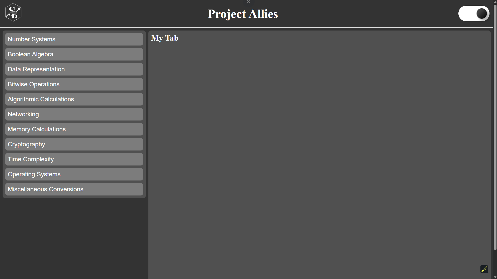
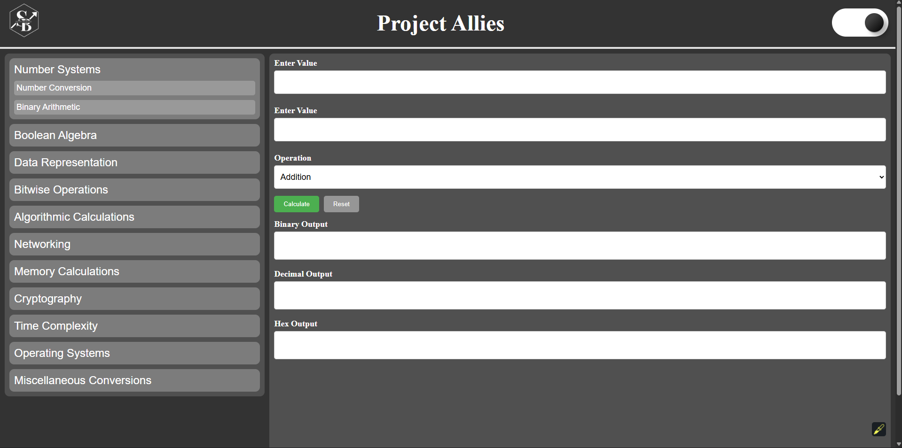
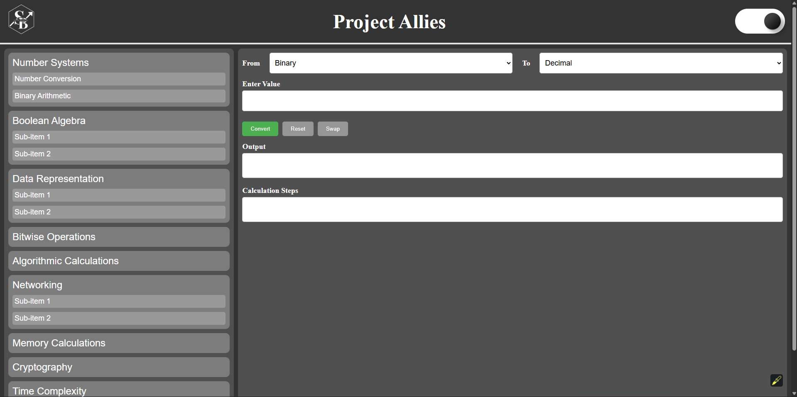

Welcome
Project Allies is a simple collection of pages showing computer science concepts with text, video, audio, and examples. It’s meant as a quick reference or introduction, not a calculator.
Project Allies — Screenshots
-
 Home layout of Project Allies (React/TypeScript). -
 Binary Arithmetic tool: bitwise & arithmetic operations. -
 Number Conversion tool with step notes.
Try the live app: Project Allies Web App.
Highlights
-
Video Demo
Watch a short base conversion demo.
Go to Media -
Audio Lesson
Listen to an audio explanation of binary numbers.
Go to Media -
Cheat Sheet
Open a number systems cheat sheet as a PDF.
View Examples -
About
Learn why I created Project Allies.
Read More
What You’ll Learn
A quick overview of topics that every CS student touches:
- Number systems: binary, decimal, octal, hexadecimal
- Basic logic and Boolean operations
- Memory and data representation
- Why CPU and storage are different
Fun Fact
“There are 10 kinds of people in the world: those who understand binary and those who don’t.”
— Anonymous Programmer Joke
Next Steps
Use the navigation above to dive into media demos, examples, or learn more about this project.